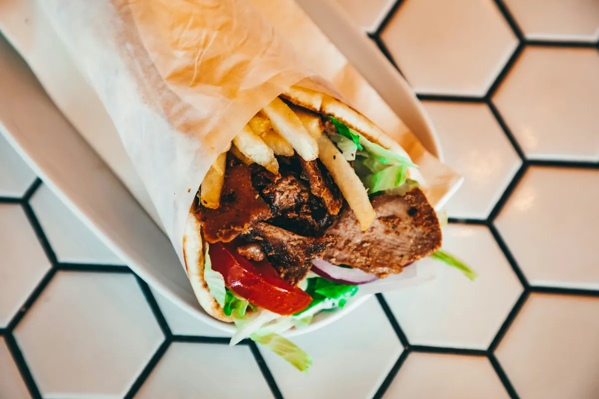
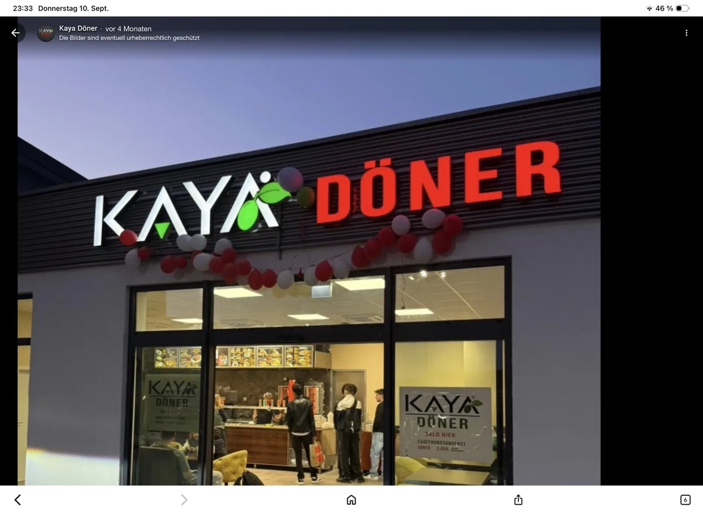

Döner
6,00€
Knuspriges Brot. Frischer Salat. Deine Lieblingssoße. Und genau das, worauf du heute Hunger hast.

Döner zum Mittag. Falafel für zwischendurch. Oder ein ganzer Teller nach Feierabend. Such dir dein KAYA aus.
Dienstags Döner. Mittwochs Hähnchen. Freitags Steak. Vielleicht ist heute genau dein Tag.
6,00€
10,00€
9,80€
Oder Steak Dürüm · 10,80 €
An den genannten Wochentagen · solange der Vorrat reicht · nicht mit anderen Aktionen kombinierbar.

Bei uns in Himmelstadt geht’s unkompliziert zu: Du sagst, was du magst. Wir bereiten es frisch für dich zu. Dazu eine unserer hausgemachten Soßen – und dein Essen ist komplett.
Wir haben regulär jeden Tag von 11:00 bis 20:00 Uhr geöffnet. An Feiertagen können die Zeiten abweichen. Ruf im Zweifel kurz unter 01590 1254030 an.
Ja. Ruf uns unter 01590 1254030 an und besprich dein Wunschgericht sowie die Abholzeit mit uns. Du findest uns in der Rote Wiese 2 in Himmelstadt.
Ja. Auf unserer Karte stehen Falafel, Halloumi und Gemüse im Brot oder im Dürüm sowie ein Falafelteller. Wenn du Fragen zu Zutaten oder Soßen hast, sprich uns vor der Bestellung an.
Du kannst drinnen oder draußen sitzen und dein Essen auch mitnehmen. Kostenlose Parkplätze gibt es direkt vor der Tür. Der Zugang ist ebenerdig.
Bitte frage vor deiner Bestellung telefonisch oder vor Ort nach den Allergenen und Zusatzstoffen deines gewünschten Gerichts. Rezepturen und Soßen können sich unterscheiden.
Bestellung und Abholzeit besprechen wir direkt am Telefon.